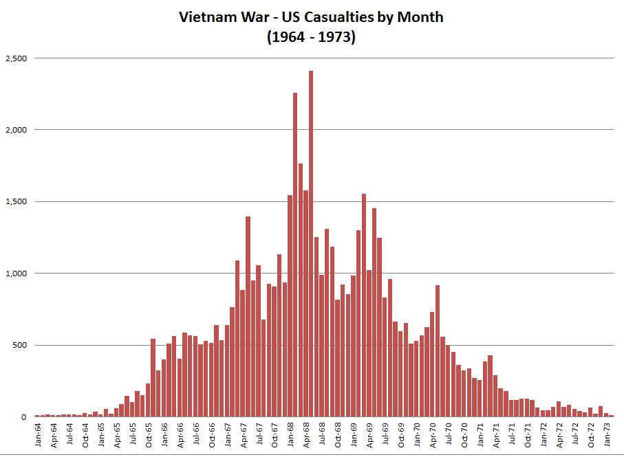

Tell me a story! (Visualizations)
I really admire and respect people who can quickly and succinctly tell a story with a visualization of data. These folks are able to deliver something that has a good “signal to noise ratio.”
Here’s a short post describing 3 visualizations that I think are really effective. One of them you’ll recognize as a classic if you read Tufte, and the last one might surprise you…
1. French Invasion of Russia
The grand-daddy of visualizations
 The numbers of men present are represented by the widths of the colored zones at a rate of one millimeter for every ten-thousand men; they are further written across the zones. The red [now brown] designates the men who enter into Russia, the black those who leave it. —— The information which has served to draw up the map has been extracted from the works of M. M. Thiers, of Segur, of Fezensac, of Chambray, and the unpublished diary of Jacob, pharmacist of the army since October 28th. In order to better judge with the eye the diminution of the army, I have assumed that the troops of prince Jerome and of Marshal Davoush who had been detached at Minsk and Moghilev and have rejoined around Orcha and Vitebsk, had always marched with the army. The scale is shown on the center-right, in \"lieues communes de France\" (common French league) which is 4,444m (2.75 miles). The lower portion of the graph is to be read from right to left. It shows the temperature on the army's return from Russia, in degrees below freezing on the Réaumur scale. (Multiply Réaumur temperatures by 1¼ to get Celsius, e.g. −30°R = −37.5 °C) At Smolensk, the temperature was −21° Réaumur on November 14th.")
Fig.1) Charles Minard's infographic
Hover over it to read a translated Legend
Alright, this is the grand-father of visualizations (Fig.1). Having studied Model United Nations goofed off in high school instead of studying European History, I walked through life with terrible knowledge gaps pre-Wikipedia but I understand the campaign was a failure.
This visualization really tells the story. Once you understand the legend, it tells an effective narrative about just how terrible was the campaign, the aftermath of major battles and the brutal winter. Perhaps the best illustration I’ve seen of the terrible cost of war by attrition (Side note: Do never invade Russia).
2. Japan Earthquakes leading up to 11-Mar 2011
The format of my next example (Fig. 2) is video. I like this presentation because it communicates effectively the concept that seismic activity is dynamic; over time, in physical space, duration, intensity and frequency. All of these are displayed brilliantly in a time-lapse depiction of the Japanese part of the Pacific tectonic plate. The opening “key” or legend is useful, though very Japanese in its spurious accuracy. If you have a short attention span, skip to 01:52 to see the actual earthquake(s) and turn up the sound because it uses sound to measure intensity as well. Brilliant!
Fig.2) Japan earthquakes 2011 Visualization map (2012-01-01)
3. The Vietnam War Memorial (Washington, D.C.)
The format of this last example (Fig. 3) is a stone memorial. But static it ain’t. It’s actually dynamic when you account for foot traffic. Read on:

I was awestruck when I first visited this on a school trip to D.C. At first the concept seems really simple: It’s an angled series of granite slabs, engraved with names. About 58,000 of them. What a powerful message delivered with beautiful simplicity. I think I heard someone else discuss the design of the memorial this way, so I am plagar-phrasing but I do not remember whom to give credit. I’ll use this blockquote thingy instead:
The memorial is experienced up close. You arrive at one of the ends, and the names start appearing at your feet. You descend slowly into a recessed area and the wall grows in height. Soon you are literally in over your head and the names keep flowing as you walk by. You reach the apex (trough?) and as you walk out, the wall’s height gradually diminishes — exactly how the US entered and exited the conflict (Fig. 4)
Holy cow! Just writing that elicits an echo of the emotion I felt when I visited: It’s visceral. Amazing. And so very simple in its execution.
Fig. 4) The Memorial design maps to the rate of US casualties over time